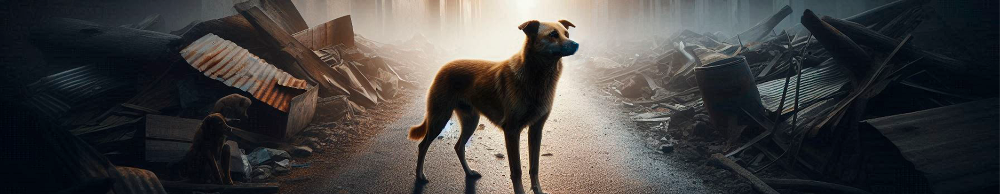
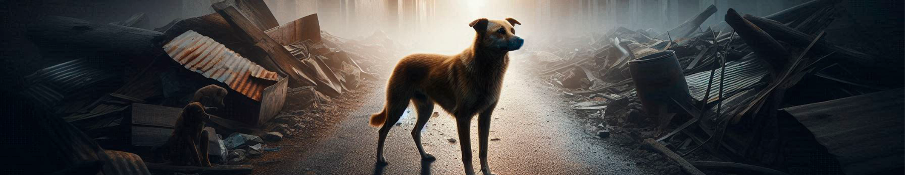

Maus-Tratos a Cães: Uma Realidade que Não Podemos Ignorar
Os maus-tratos a cães são uma questão alarmante e preocupante que afeta não apenas os animais, mas também a nossa
sociedade como um todo. Embora muitos considerem os cães como parte da família, muitos ainda enfrentam situações de
violência, abandono e negligência que são inaceitáveis.
Abandono é uma das formas mais visíveis de maus-tratos. Infelizmente, muitos cães são deixados nas ruas por seus
proprietários, sendo forçados a lutar pela sobrevivência. Sem comida, abrigo ou cuidados, esses animais sofrem com a
solidão e o desespero. Eles enfrentam perigos diários, como doenças e atropelamentos, enquanto buscam um pouco de amor e
segurança.
A violência física contra cães é outra realidade devastadora. Casos de agressões físicas, como socos, chutes e outros
atos de crueldade, são uma manifestação extrema da desumanidade. Esses atos não só causam dor física, mas também afetam
profundamente a saúde mental e emocional dos animais, deixando cicatrizes que podem durar por toda a vida.
A negligência é um problema igualmente sério. Cães que são mantidos em condições inadequadas, sem alimentação adequada
ou cuidados veterinários, enfrentam um sofrimento silencioso. Muitos morrem de doenças que poderiam ter sido tratadas,
simplesmente porque seus cuidadores optaram por ignorar suas necessidades. Essa falta de atenção e cuidado não é apenas
uma falha, mas uma forma de maus-tratos que deixa uma marca indelével.
Outro aspecto preocupante é o uso de correntes para manter os cães presos por longos períodos. Muitos
animais passam
suas vidas acorrentados, sem a liberdade de se movimentar ou interagir. Essa privação não é apenas física, mas também
emocional, resultando em comportamentos ansiosos e depressivos.
É importante refletir sobre o que está por trás desses atos de crueldade. Muitas vezes, a indiferença e a falta de
empatia em relação aos animais estão enraizadas em uma desconexão entre os seres humanos e a vida que compartilham
com
outras espécies. A conscientização é crucial para combater essa realidade. Cada um de nós tem o poder de fazer a
diferença, seja denunciando abusos, adotando animais em necessidade ou promovendo a educação sobre cuidados
responsáveis.
A luta contra os maus-tratos a cães não é apenas uma questão de proteger os animais; é também uma oportunidade de
construir uma sociedade mais empática e solidária. Ao agir, podemos garantir que cada cão tenha a chance de viver
uma
vida digna e plena, recebendo o amor e o respeito que merece.
“A maneira como tratamos os animais reflete a nossa humanidade.”
— Albert Schweitzer